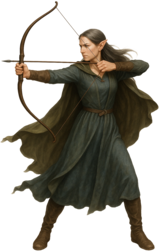

Bardh
Sindarin Crash Course by Rínor
Contents

A preposition comes before a noun, pronoun, or noun phrase and shows its relationship to the rest of the sentence. It can identify a recipient, a place, a direction, a source, or another connection. The case names in this chapter describe those roles; they do not imply that Sindarin adds a different case ending to every noun.
First, here are some additional nouns for practice:
The following list gives reference forms of prepositions. A preposition can both undergo mutation because of its place in the sentence and cause mutation on the word that follows it.
| Preposition | Following mutation | Reading note |
|---|---|---|
| ed | Stop | The preposition's final consonant can also change or disappear at the boundary. |
| or | Liquid | Use the liquid-mutation row for the following initial. |
| an, pen | Mixed | This matches the classification in my mutation chart. |
| nan | Nasal | Distinguish this genitive preposition from directional na. |
| be, mi, nu, po, na | Soft, also called vocalic | The chart lists po as the reference form. The form bo also appears in the examples below. |
These are the patterns I use in the course chart. A preposition combined with an article may follow a different mutation pattern. See the Mutation Tool for the complete boundary, including changes to the preposition itself.
These short examples show a preposition with its complement. The surrounding sentence can also affect the preposition:
A definite preposition combines a preposition with a definite article. In this course, I use the system presented in my Mutation Tool, based on work Ellanto introduced on VL. The chart includes adopted and reconstructed forms; its complete set is not a fully attested Tolkienian paradigm.
Forms discussed on this page include an → ’ ni and nu → nui/nuin. Read the singular or plural label and the following mutation together. The two forms may look alike before one initial and differ before another.
For example:
For definite an, the chart uses vocalic mutation in the singular and nasal mutation in the plural. For definite mi, it uses mixed mutation in the singular and nasal mutation in the plural. The plain preposition's rule does not automatically carry over to the fused form.
Choose by the relationship you mean, rather than by a single English word. In particular, English “to” can identify either a recipient or a destination.
| Relationship | Reference form | Meaning used here |
|---|---|---|
| Recipient or beneficiary | an | to, for |
| Purpose (Ellanto’s proposal) | an | Introduces the aim of an action; see Purpose Clauses with an. |
| Genitive relationship | nan | of |
| Motion toward a destination | na | to, towards |
| Origin | o | from, coming from |
| Topic | o(h) | about, concerning |
| Movement away or out | od; ed | away from; out, forth |
| Location | mi; po; nu; or | in; on; under; above |
These are additional prepositions I use in this course. Their history and evidence differ, so the list should not be read as one completely attested Tolkienian system.
One English preposition can express several relationships. These English phrases show why the whole meaning matters:
| English phrase | Relationship | Starting point in this course |
|---|---|---|
| by the fountain | Beside a place or thing | sa for the “beside” sense. |
| made by the craftsman | Agent: who performs the action | mo for the agent. |
| through the wall | Passage through something | tri for physical passage. |
A proposal for one figurative or instrumental use should not be extended to every occurrence of English “by” or “through”.
The dative often identifies the person or thing receiving something, or the person for whom something is done. Two constructions are useful here:
See Eldamo's dative discussion for the evidence and word-order construction.
A dative can also express the experiencer in certain lexical constructions. See Dative Experiencers and Passive and Impersonal Constructions for the proposed forgetting example.
Here are some examples of the dative. The first mixed-mutation form follows my course convention; the nasal-mutation alternative is included for comparison.
A purpose clause explains the aim of an action. In a Discord note, Ellanto suggested that purpose infinitival clauses should likely be constructed with an. His examples distinguish purpose from a complement that supplies what was wanted:
| Function | English | Sindarin |
|---|---|---|
| Complement of “wanted” | I wanted to drink wine | Anírannen soged cherw |
| Complement with a stated participant | I wanted him to drink the wine | Anírannen den soged e·cherw |
| Purpose of halting | I halted [in order] to drink wine | Adhóren an hoged cherw |
The first two examples tell us what was wanted; the second also tells us who was supposed to perform the action. English “to” therefore does not call for an in every infinitival construction.
These are Ellanto's proposed examples. For the general use of verbal nouns as infinitival complements, see Verbal Nouns and Infinitives and Eldamo's verbal-noun discussion.
A genitive relationship connects two nouns, often corresponding to English “of”. In a simple construct, the main noun comes first and the related noun follows: aran Moria means “king [of] Moria”. This first noun is called the head. The second noun is not an adjective and is not lenited merely because it follows another noun.
I also regularly use the genitive preposition na(n) “of”, as in the supplied aran na Moria. It causes nasal mutation, and nan is its form before vowels. Compare na thâl “of [a] foot (tâl)” and nan aran “of [a] king”. Directional na has a different role and takes soft mutation in this course.
The preposition does not need a plural ending to introduce a plural complement. The earlier examples include aran na chîr lim “king of swift ships”, na thail “of feet”, and nan erain “of kings”. An article adds definiteness; it is not simply a plural marker.
The earlier page also lists nan i·thail “of feet” and nan in·erain. These are retained here as supplied. The article in this construction marks a definite complement; it does not make the head noun definite.
Eldamo's genitive discussion explains the competing analyses. Its recommended late system gives nan a narrower role than I use here.
The head is the noun being identified, while the genitive complement tells us what it is related to. The genitive complement is the related noun that follows it. In my course, construct genitives and nan phrases can express similar relationships, with the construct often sounding more formal or literary. Their handling of definiteness differs:
| Head | Complement | Construction |
|---|---|---|
| Indefinite | Indefinite | Use a bare construct or a nan phrase. |
| Definite | Definite | In a construct, the article on the complement can make the whole phrase definite. With nan, mark both nouns definite. |
| Definite | Indefinite | Mark the head definite and use nan with an indefinite complement. |
| Indefinite | Definite | Leave the head indefinite and use nan with a definite complement. |
The key difference: definiteness can extend from the complement to the head in a simple construct. It does not extend through nan. The table describes ordinary common nouns; proper names and inherently definite nouns need not take an extra article. A following adjective may describe either noun where the grammar allows it. Use agreement, meaning, and context to decide what it belongs with; the nearest noun is not automatically the answer.
Examples provided by Ellanto on VL:
King and Elves are both indefinite → a king of elves
King is indefinite / Elves is definite: → a king of the elves
King is definite / Elves is indefinite: → the king of elves
King and Elves are both definite → the king of the elves
The same definiteness question arises with three or more linked nouns. Ellanto's proposed analysis places the article only on the final noun of a simple construct chain; a definite final noun makes the whole chain definite.
| Pattern | English interpretation | Definiteness |
|---|---|---|
| X + Y + Z | an X of a Y of a Z | Indefinite throughout |
| X + Y + the-Z | the X of the Y of the Z | Definite throughout |
These are structural labels, not Sindarin sentences. For independently definite and indefinite members, return to the course's nan distinction instead of adding articles inside this simple pattern.
A trailing adjective can describe an earlier noun in the chain. Identify its intended noun from agreement, meaning, and context; do not assign it to the nearest noun solely by position.
Source: Ellanto's Sindarin Genitive Constructs. The essay presents a syntactic analysis and acknowledges exceptions in the evidence. Its proposed explanation of adjective placement is not a complete, settled account of Sindarin syntax.
The terms allative, ablative, and locative describe three different relationships: movement toward somewhere, movement away from somewhere, and location in a place. A recipient is a different relationship, even though English can use ‘to’ for both.
The following examples compare origin, dative, and location. The an pair illustrates a recipient or beneficiary, rather than movement toward a destination:
Recipient or destination? The supplied dative examples are e·Valan aun eliad an amon. “The Vala gave a blessing to a hill.” and Senin i he maer an en·amon. “I think that this is good for the hill”. For motion, the earlier page gives “I am going to[wards] a hill”, Menin n’ amon. Directional na can elide to n’ before a vowel.
Listen to the whole phrase: mi vinas / mi e·vinas have the same mutated noun initial, but the explicit article makes the written phrases different. They should not be described as having no audible distinction. The plural comparison supplied here is indefinite mi vinais versus definite m’ i·minais, with nasal mutation in the latter.
I distinguish these three relationships in my usage and mutation chart. The common surface spelling o does not identify the intended relationship by itself.
| Reference form | Meaning in this course | Mutation after the plain form |
|---|---|---|
| o | from, coming from; genitive of origin | Soft (vocalic) |
| o(h) | about, concerning | Sibilant |
| od | away from | Stop |
This is the distinction I use throughout the course. Historical explanations of how these forms developed or merged remain a separate question. Use the definite row for the particular preposition when an article is involved.
The earlier discussion concerned od i versus uin and distinguished two prepositions that could appear as o(d). In that analysis, o(d) < ✶aut “(away) from” caused stop mutation, while o < ✶hō “from, of” marked origin and caused lenition.
The examples discussed were o galadhremmin and o menel for the first analysis, and o Eregion and o Imladris for the second. The discussion associated uin with ✶hō. I therefore reserved uin for origin rather than extending it to the ✶aut sense.
The earlier alternatives mentioned were od e and the more speculative odin/odhin, considering awt versus awd. These record the earlier proposal; they are not a complete, securely attested contraction paradigm.
A prepositional phrase can belong with a noun or with what is said about that noun. This distinction is sometimes called attachment: the question is what part of the sentence the prepositional phrase is actually describing.
| English wording | Intended attachment | What is being said |
|---|---|---|
| The dragon's lair in the mountains is hidden. | “In the mountains” belongs with the lair. | The mountain location helps identify the lair; the statement says that this lair is hidden. |
| The dragon's lair is hidden in the mountains. | “In the mountains” belongs with “is hidden”. | The location is part of what the statement says about the lair: it is hidden there. |
This distinction came up in a discussion of one of my own sentences. I originally intended the meaning:
The dragon's lair is hidden in the mountains.
The form under discussion was:
Dolen i-Dorech e-‘lûg m’ in-emyn.
Ellanto pointed out that the word order could instead encourage the following grouping:
[Dolen] [i-Dorech e-‘lûg [m’ in-emyn]]
[The dragon's lair [in the mountains]] [is hidden]
On that reading, m’ in-emyn is attached to the noun phrase describing the lair. The phrase therefore helps identify which lair is meant: the lair in the mountains. That is different from my intended structure:
[The dragon's lair] [is hidden [in the mountains]]
Here the location belongs with the predicate. The sentence first identifies the dragon's lair and then says something about it: that it is hidden in the mountains.
Ellanto therefore suggested placing the location phrase with the predicate more clearly:
i-Dorech e-‘lûg dolen v’ in-emyn
or
Dolen v’ in-emyn i-dorech e-‘lûg.
In my current style of writing, incorporating the spelling and grammatical conventions I use throughout this course following the material published in PE23, I would write the same structural alternatives as:
Torech en·amlug dolen v’ in·emyn
or
Dolen v’ in·emyn torech en·amlug.
The important point here is not simply which word comes first. The position of the prepositional phrase helps the reader understand what it belongs with. A phrase placed inside or immediately after a noun phrase may naturally be understood as describing that noun, while a phrase placed with the predicate may instead be understood as part of what is being said about it.
Word order therefore helps show the intended grouping, but it does not resolve every ambiguity by itself. Consider the whole phrase, agreement, meaning, and context. The nearest noun is not automatically what every following phrase describes.
Note: I deliberately leave dolen unmutated here. I intend it as the predicate, not as an adjective directly modifying either torech or amlug. Leniting it could make the sentence easier to misread as either “the lair of the hidden dragon” or “the hidden lair of the dragon,” especially with the location phrase following. I therefore keep dolen unmutated to make the intended structure clearer.
This also matters for genitive phrases and relative-clause attachment. The older suggestion that nan alone determines adjective attachment was tentative, so I do not treat it as an automatic rule here.
A prepositional phrase can describe a noun or an action, or express another relationship in the sentence. I apply mutation to the preposition across these uses rather than limiting it to adverbial phrases. A reference form in a vocabulary list does not show every change that may appear when the preposition is used in a full sentence.
| Relationship | What changes? | How it works |
|---|---|---|
| The phrase in its sentence | The preposition itself | The surrounding construction can mutate the beginning of the prepositional phrase. |
| The preposition with its complement | The following initial, and sometimes the preposition's ending | The chosen preposition or definite combination governs this internal boundary. |
Mutating the preposition does not make its complement a second direct object, and it does not mean that every word in the phrase takes the same mutation. Each word has to be considered according to its own grammatical relationship. The plain preposition also does not become plural like an adjective, although a fused article can distinguish singular and plural.
These examples show a prepositional phrase following a verb:
Prepositions can behave like loosely attached prefixes at a mutation boundary, but this does not make every prefix a freely usable preposition. Elements such as or-, di-, trî have to be considered in their own constructions.
The earlier page compared the following definite expressions:
These preserve the earlier comparison between a fused form and a phrase with an explicit article. They do not establish a universal contraction rule. Evidence such as Ae Adar also has to be read in its own context.
```A pronoun can be the complement of a preposition. Read the whole combination, including its mutation, before deciding that a visible form must be a different pronoun. A mutated personal pronoun can sometimes resemble another word.
For the dative, use the forms already given in 1.2.3.2a Dative Pronouns, together with my mixed-mutation convention. The demonstrative table also includes the dative forms I use. These tables should not be treated as a rule for simply attaching an to every independent pronoun without considering the form involved.
The possessive ín/în is a separate issue from the dative reflexive. Its proposed dependence on the subject form e, and what that might mean for de, remain under discussion. See 1.2.3.3a Reflexive Possession for the proposal and how I treat it in this course.
I normally use a separate possessive following the noun in this course. Sindarin also has possessive suffixes, so the earlier claim that Sindarin does not suffix possessives was too broad. The surviving suffix forms belong to different stages and do not give us enough evidence to build a complete paradigm. See Eldamo on possessive pronouns and suffixes.
Some examples below retain singular i from the earlier page. My regular course article is singular e/en, as explained in the noun chapter.
A possessive identifies the possessor. A preposition or genitive construction shows how the noun phrase relates to another part of the sentence. Those are separate jobs. Compare n’ i-amon gín. “to[words] your hill” with i·amon gín “your hill”.
The plural examples are n’ in·emyn gín “to[words] your hills” and in·emyn gín “your hills”. A genitive relationship can also be supplied by the surrounding noun construction without an explicit word for “of”. Some more examples:
Practice with the lesson's supplied answers. Accents and ñ matter; the checker accepts differences in capitalization and punctuation. Its feedback compares your entry with this answer set.